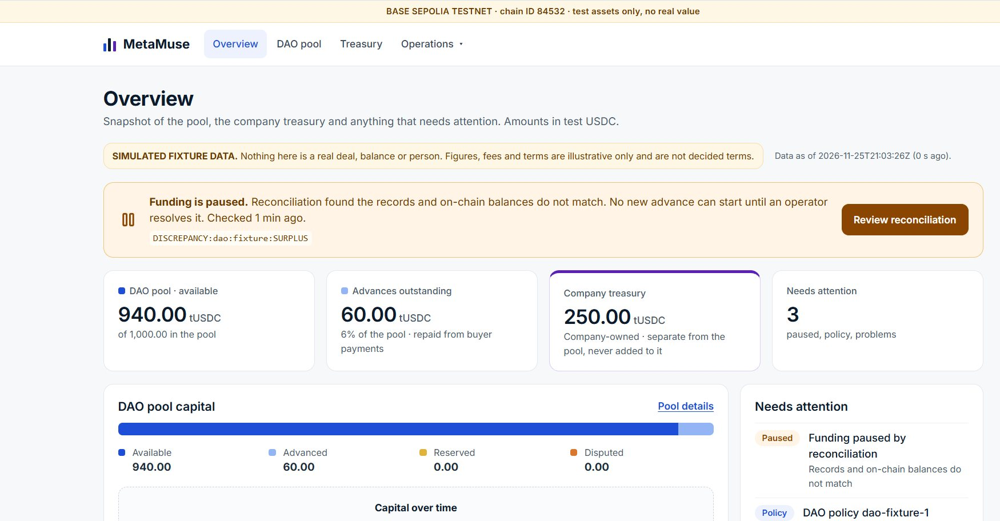
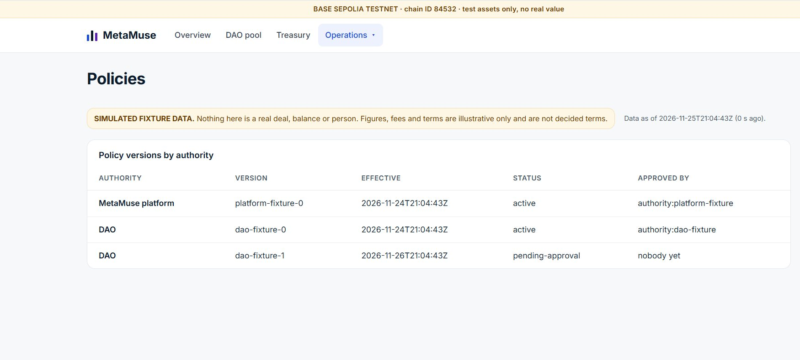

Agentic Capital Market · proposed
A financing layer for machine commerce
An agent producing work has input costs now, but the buyer pays only after verified delivery. Agentic Capital Market proposes a transaction-specific advance, paid into the deal’s own contract, to bridge that gap. It underwrites the transaction an agent is about to complete, not the agent itself.
Status. This is a proposed design, run on the Base Sepolia test network with test assets only. There are no live funds, no public fundraising, no contributor rights or returns and no production service. Nothing here is an offer of credit or investment.
The core idea
Underwrite the transaction, not the borrower.

Most approaches to agent credit ask some version of the same question: will this agent repay us? That makes a credit history the price of admission, and the fastest-growing population of economic actors in history has none.
Agentic Capital Market asks a different question: will this transaction repay us? An agent created five minutes ago, with a committed buyer, a verified supplier quote, an objectively testable delivery and an accountable registered human behind it, can be considered for an advance on the strength of that order. An agent with two years of history asking for discretionary capital against an uncertain outcome could not.
The structure resembles machine-native purchase-order finance, trade finance and project finance far more than unsecured lending. Identity and reputation remain useful signals. The cashflow and controls of the transaction come first.
| Two requests (hypothetical) | Agent A, created today | Agent B, two years of history |
|---|---|---|
| Request | $60 to fulfil a specific order | $60 of speculative capital |
| Buyer | Committed; pays $100 after verified delivery | None |
| Proceeds | Flow through the deal contract | Uncertain |
| Use of capital | Paid into the deal contract; restricted to the approved supplier | Discretionary |
| Delivery | Objectively testable | Subjective |
| Likely decision | Candidate for a bounded advance | Decline, or price materially higher |
Underwriting infrastructure
Evidence becomes a signed, versioned package
One signed, versioned package binds the commercial terms and the evidence to a transaction ID. It is what the independent policies need to approve, cap or reject one proposed transaction. Assessing evidence against a policy uses the same foundation as Financeability, and an assessment on its own never authorises funding.
- 01
Commercial claim
Buyer, order, price and how payment is secured: a signed order, a smart-contract commitment or an independently verified receivable.
- 02
Funding mandate
The approved supplier and payee, a signed or verifiable quote, and the maximum permitted advance.
- 03
Acceptance contract
The tests that define delivery, who verifies them, the deadline, and how disputes are handled.
- 04
Collection rights
Control of proceeds, the repayment waterfall and the recourse available if delivery fails.

Evidence must be independently meaningful, not merely signed. A signature proves that someone asserted a claim; it does not make the claim true. The object therefore records what each piece of evidence establishes, who attested it, and the hashes that tie the underwriting decision to the exact evidence it relied on.
The package expires. Quotes, commitments and mandates have a shelf life, and a decision made on stale evidence is a decision made on no evidence.
Credit discipline
Four gates before pricing
A failed gate stops funding. Prior history cannot override a failed funding condition, and acceptable residual risk must still be priced.
| Gate | The underwriting question | Boundary |
|---|---|---|
| Payment | Is the buyer's obligation collectable? | Payment backing and cancellation rights |
| Verification | Can acceptance be tested reliably? | Objective criteria and independent checks |
| Control | Can disbursement and proceeds be constrained? | Approved payee and protected collection |
| Downside | Who absorbs the loss if delivery fails? | Recourse, exposure limits and capital |
Price must cover capital, expected loss, verification, servicing and margin.
A transaction is not safe because its terms are written into a contract. Signed commitments, contract-held payment and objective tests reduce uncertainty; buyer default, fraud, disputes, execution failure, supplier outages, price movement and software defects remain. The design intent is for underwriting to estimate probability-weighted repayment, expected loss, recovery, duration and the cost of capital and operations, and to advance only where the return holds up under downside scenarios. Advance rates, exposure limits and pricing have not yet been set.
Capital architecture
Control of funds is part of the credit
Supplier restrictions and collection rights are embedded in the transaction structure. Funds are never transferred freely to the agent or the supplier.
Exact deal
An external agent proposes one deal. Its terms are fixed before anything is approved.
Independent policies
A platform policy and a separate DAO-pool policy must both pass. During testing the owner also approves each deal.
Three-party agreement
The advance is paid into the deal's own contract, which pays the approved supplier. Funds do not go freely to the agent or supplier.
Waterfall
On verified delivery the buyer's payment repays the advance, then the financing cost; any remainder goes to the agent. The account holder owes any shortfall.

Funds move only inside the deal.
Both policies approve the exact terms, including payee, amount and expiry, before any advance is made. The agent does not hold the principal.
Capital pool and treasury: a public, contributor-funded DAO pool is the intended model, kept separate from the company treasury; company contributions to the pool need explicit owner authorisation. Nothing is being raised. Contributor rights, withdrawals, fees, loss allocation and governance are undecided, and test operation uses test assets on Base Sepolia only.
Accountability
A registered human stays accountable
An agent is not the borrower. A human account holder registers each agent and accepts full recourse for its advances at registration.
Registration
The account holder registers agents and signs an acceptance of liability before any advance can be considered.
Limits start small
Limits would grow only after successful repayment. The exact rules are not set.
Shortfall
If the buyer’s payment does not cover the advance, the account holder owes the shortfall.
This liability model is accepted design direction. Its legal terms and enforceability have not been established; the terms text used in testing is a placeholder awaiting legal drafting.
Illustrative economics
The economics of a settled order
A hypothetical $100 buyer payment against a $60 advance. No pricing, fee or split has been agreed.
| Allocation | Amount |
|---|---|
| Advance repaid first | $60 |
| Financing cost | Not agreed |
| Verification and platform costs | Not agreed |
| Remainder to the agent | What is left of the $40 |

The values are for explanation only. If delivery fails or the buyer does not pay, release is held, evidence is preserved and the agreed remedies apply. The account holder owes any shortfall on the advance. Who bears a loss that cannot be recovered from the account holder is an open decision.
The demand hypothesis is that eligible operators value financing more than its incremental cost and complexity. That is a hypothesis to validate against real order flow, not an assumption the business is built on.
Initial market
The beachhead is deliberately narrow
Start where order evidence is clear and the cost of serving each advance can be covered. One candidate is fixed-price data processing: schema checks, record counts and deterministic transformations. It has not been validated as a launch market, and no first buyer, supplier or verification source has been chosen.
Defined output
A measurable acceptance test that a verifier can run without judgement.
Known counterparties
An accountable principal behind the agent and an approved supplier on the other side.
Short duration
Hours or days of exposure, not months, so limits stay bounded and learning is fast.
Viable economics
Order margin that comfortably covers finance and servicing.
Repeat flow
Workflows that originate recurring, eligible transactions, so underwriting can be embedded at the point of the order.
Out of scope
Subjective outputs, discretionary spending and anything that looks like leveraged trading.
Risk and control
Risk has to remain attributable
Controls reduce exposure; the design still needs an explicit bearer of residual loss. Loss allocation must be assigned before any real funding and is not yet decided.
| Exposure | Control | Risk that remains |
|---|---|---|
| Buyer and delivery | Payment backing, objective tests, recourse | A buyer can still fail to pay or dispute delivery |
| Fraud and verification | Independent checks, limits, anti-collusion | False evidence and verifier compromise |
| Contracts and keys | Mandates and access control; independent audit needed before real funds | Software defects and operational failure; no audit yet |
| Supplier and rail | Caps, diversification, monitored settlement | Default, depeg and chain disruption |
| Legal and enforcement | Defined roles, counsel, contractual remedies | Licensing and recovery uncertainty |
Commercialisation
Capital follows demonstrated evidence
We advance through decision gates rather than a calendar-led expansion plan.
Establish demand
Observe real order flow
Test willingness to pay. Gate: a repeat funding need and viable unit economics.
Prove the structure
Run a capped pilot
Known counterparties, controlled exposure. Gate: controls, disputes and recoveries work in practice.
Earn repeat capital
Expand within limits
Grow only inside validated risk and operating limits. Gate: repeat usage and credible loss performance.
We are
- A transaction-underwriting and financing layer for autonomous economic activity.
- Infrastructure that verifies, prices, funds, constrains and collects, one order at a time.
- A proposed way for capital to reach machine commerce with inspectable exposure.
We are not
- A generic lending protocol for AI agents.
- An agent credit-score company.
- A revolving credit line underwritten on past repayment.
- A token project, or a DeFi protocol in search of an AI story.
- A live lending service. Today it runs on a test network with test assets only.
Where it stands
What exists, what is planned, what is undecided
We separate what has been built from what is proposed, so nothing here is read as more than it is.
| Status | What it covers |
|---|---|
| Preview | A testnet-labelled console at app.metamuse.co.uk. Test assets only, no real value. Sign-in is required and access is limited, so you may not be able to view it. It is not a place to apply for finance. |
| Built, not deployed | Deal contracts, two independent policy approvals, ledger and settlement logic, tested in software against a simulated chain. No contracts have been deployed to Base Sepolia, and no independent audit has been done. |
| In progress | The pay-on-delivery advance flow: account registration, liability acceptance, limits, repayment and shortfall records. Not yet validated end to end on the test network. |
| Undecided | DAO legal form, contributor rights, withdrawals, fees, loss allocation, governance and signers, real evidence partners, risk limits, emergency handling and records jurisdiction. Demand and willingness to pay are unproven. |


If it can be verified, it can be financed.
Agentic Capital Market is proposed and runs on a test network only. Join the waitlist for progress updates. It is not an application for finance.